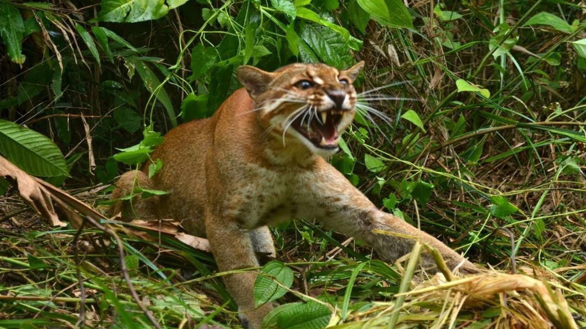

Калимантанская Кошка

Калимантанская кошка, или борнеоская кошка (лат. Catopuma badia) — хищное млекопитающее семейства кошачьих.
Калимантанская кошка обитает в тропических лесах на острове Калимантан, относящемся к Индонезии и Малайзии. По данным филогенетических исследований, относится к одному из наиболее древних ответвлений семейства кошачьих. Этот вид появился около 4 млн. лет назад, задолго до того, как Калимантан отделился от материка.
Известно, что это преимущественно ночное животное, большинство известных наблюдений в природе происходили в прибрежных зарослях вдоль рек и других водоёмов.
Длина тела животного около 58 см, масса 2,3—4,5 кг. Охотится на мелких млекопитающих и птиц. Этот вид очень редок и малоизучен. Первый известный целый экземпляр (и седьмой экземпляр вообще) — это взрослая самка, пойманная в капкан в 1992 году местными жителями. Некоторое время они удерживали её в неволе, после чего доставили в полуживом состоянии в музей штата Саравак (Малайзия), её чучело выставлено в музее штата. Всего в музеях мира по состоянию на 2007 год хранится 10 экземпляров, из них только 2 на Калимантане, в Малайзии. В 2002 году кошка впервые была сфотографирована в природе, в 2003 году 1 самка этого вида была изъята таможенниками у контрабандиста и помещена в вольер в зоопарке в штате Саравак, где вскоре умерла от пневмонии, её тушка была сожжена сотрудниками ветеринарной службы. Местный коллекционер в 2005 году поймал в ловушку 1 самца (фото в настоящей статье), позже эта кошка была выпущена обратно в дикую природу.
Львы — одни из немногих наземных хищников и единственные представители семейства кошачьих, у которых хорошо выражен половой диморфизм: львицы выделяются меньшими размерами и отсутствием гривы. Самки чаще выступают в роли охотника — по этой причине грива, которая может помешать при маскировке, у них не развита. Цвет гривы варьирует от белого до чёрного, а с возрастом всегда темнеет.
